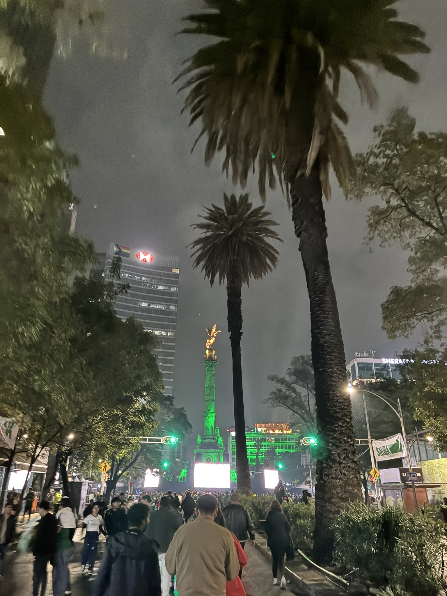
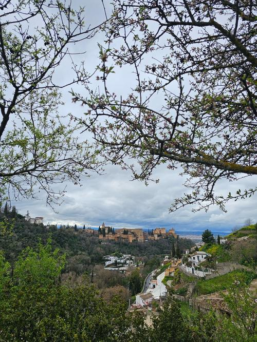

May to July
-

Two Months in Mexico
A System of a Down show, volunteering in Tepoztlán, World Cup watch parties in CDMX, and a family stretch in Tijuana. The longest trip I've taken.
Read more →
March
-

Solo Trip to Spain
Two weeks solo through Madrid, Granada, Sevilla, and Cádiz. Tapas, a flamenco show I stumbled into by accident, and the people who ended up making the whole trip.
Read more →